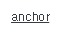

3.Anchor
수정 일자 버전 (SP2)
WebSquare5 Studio : 20180117_1349_x86_B
WebSquare5 Engine : 5.0_2.2982B.20180223.154326_1.5
HTML의 <a> 태그와 유사한 인터페이스를 갖는 컴포넌트 입니다.일반적으로 html 사용시 anchor에 사용하는 style 효과는 동일하게 사용이 가능합니다. (a:hover, a:visited, a:active 등) 웹스퀘어에서는 이미지 버튼을 만드는 경우 trigger 대신 anchor를 사용하도록 권장되어있습니다.
본 컴포넌트는 outerDiv 속성이 공백이거나 true일경우 최상위는 div Tag로 이루어 지며, outerDiv가 false일 경우 최상위는 a Tag 단독으로 이루어진다. 또한 웹스퀘어에서 사용할 수 있는 버튼 컴포넌트(anchor, trigger, Property{tagname})중의 하나이며 버튼을 그릴때 기본적으로 권장드리는 컴포넌트 입니다.
3.1Property
Property | Description |
|---|---|
class | HTML의 class속성과 동일한 기능을 제공하며 css파일 또는 style블럭에 정의 한 class를 1개 또는 공백(space)를 이용하여 다중 적용이 가능하다. |
clickEventElement | [default:anchor, outerDiv]outerDiv속성 값이 true인 경우, click 이벤트를 적용 할 영역을 선택한다. |
disabled | [default:false, true]HTML의 disabled속성과 동일한 기능을 제공하며 컴포넌트를 비활성화 시킨다. |
escape | <>&"를 HTML Escape 문자로 변환하여 화면에 표시한다. |
href | [default:"javascript:void(null);"]이동 할 페이지의 URL 을 입력한다. |
id | 컴포넌트의 ID로 전역객체로 할당되며 script에서 본 id로 컴포넌트에 접근이 가능하다. |
nextTabID SP2 | tab으로 이동시 이동할 컴포넌트 ID |
outerDiv | [default:true, false]컴포넌트의 최상위를 div Tag로 감쌀지 여부. |
style | InputBox의 style 속성 |
tabIndex SP2 | Tab Key를 이용 한 컴포넌트의 포커스 순서로 HTML의 tabindex속성과 동일한 기능을 제공한다. |
target | [_blank, _parent, _self, _top]a Tag의 target 속성과 동일한 기능을 제공하며 href의 속성에 정의 된 문서가 열릴 위치를 정의한다. |
title | HTML의 title속성과 동일한 기능으로 명시 된 값을 브라우저에서 마우스 over시 툴팁형태로 표현한다. 일반적으로 웹접근성 작업 시 설정한다. |
toolTip | 웹스퀘어에서 만든 toolTip으로 컴포넌트의 추가정보를 명시한다. 마우스 over시 표현된다. |
tooltipFormatter SP2 | tooltipDisplay속성이 true일 때 데이터를 표현 할 tooltip의 내용을 변경 할 사용자 함수명. 사용자 함수에서는 componentId, label을 인자로 받아 tooltip에 표현 할 string을 return한다. |
3.2브라우저 캡쳐화면

[그림 3-1]default anchor 스타일
3.3class 적용과 스타일 변경
anchor컴포넌트를 Design view에 그리면 사각형의 영역이 생깁니다. 마우스 더블클릭으로 텍스트를 입력 할 수 있으며, Source view에서 <xf:label></xf:label>사이에 텍스트를 입력 또는 수정해 줄 수 있습니다.
anchor컴포넌트는 Property창에서 outerDiv 설정을 해줄 수 있으며, outerDiv의 값을 true로 해줄 경우 anchor태그를 감싸는 컨테이너에 div태그가 감싸지며, false를 줄 경우 a태그로 파싱이 됩니다.
websquare5에서 anchor의 outerDiv 기본속성값은 false 입니다.
[그림 3-2]Class 를 anchor_sample 이라고 지정했을 경우
웹스퀘어에서는 xml파일의 anchor컴포넌트를 html로 랜더링 되는 과정에 엔진에서 w2anchor 라는 class를 파싱합니다,(w2로 시작하는 클래스는 웹스퀘어 엔진에서 사전에 정의되어 있습니다.)
해당 클래스는 웹스퀘어에서 제공하는 기본UI를 보여주며 사용자 클래스를 정의함으로써 해당 클래스를 덮어쓰기(overriding)가능합니다.
위에 예제는 anchor컴포넌트의 Property속성 중 class명을 anchor_sample으로 주었습니다. html 로 랜더링 시 w2anchor 바로 뒤에 연결되며 후 순위로 적용됩니다.
.anchor_sample a 에 아이콘 이미지의 background를 주고 padding 및 폰트설정에 대한 css를 텍스트에 주었습니다. a:hover: 마우스커서가 하이퍼링크 위에 올라갔을 때 선택(마우스 오버시) , a:active : 마우스버튼을 하이퍼링크 위에서 선택했을 때 순간을 선택(클릭하는 순간)에는 color 색상을 다르게 주어 변화를 주었습니다. 자세한 css는 아래 예제와 같습니다.
/* 단순 a 태그 css적용 예제 */ .anchor_sample a { height:15px; padding:1px 0 3px 20px; font:normal 12px "Arial"; color:#5c81a7; text-decoration:none; background:url(/DesignGuide/images/icon_view.gif) no-repeat 0 50%; } . anchor_sample a:hover { color:#8981ca; } . anchor_sample a:active { color:#22ac38; }
[ class의 여러개를 중첩하여 버튼 set 만들기 ]
Class 중첩버튼을 만들기 이전에 가변형태의 버튼을 만들어 보도록 하겠습니다. 작업을 하다보면 텍스트로만 이루어진 버튼 작업을 할때가 있습니다. 그럴경우 스타일은 같은데 텍스트의 길이에 따라 버튼을 만들수 있습니다.
[그림 3-3]가변버튼 모습
.btn의 버튼 스타일을 유지하면서 텍스트 앞에 엑셀 아이콘을 추가해 보겠습니다.
[그림 3-4]class 중첩사용(다중 클래스)
[그림 3-5]class의 여러개를 중첩하여 만든 버튼
다중 클래스는 class를 2개이상 사용하는 것을 말하며 공백으로 구분을 합니다.
아래 예제는 “btn”, “excel”이라는 2개의 클래스를 사용하였습니다. .btn 버튼스타일 정의한 css에 추가 또는 변경하고 싶은 속성을 excel 클래스에 적용한 예제 입니다.
참고로 다중 클래스 적용은 ie6이하 버전에서는 적용이 되지 않습니다.
/*가변버튼 css 예제 */ .btn{ margin-right:3px; min-width:40px; background:url("/DesignGuide/images/default_01.png") left top no-repeat; overflow:hidden; } .btn a{ padding:4px 8px 2px; height:14px; line-height:13px; color:#404040; text-align:center; background:url("/DesignGuide/images/default_02.png") right top no-repeat; display:block; text-decoration:none; cursor:pointer; } /* class의 여러개를 중첩하여 버튼 set 만들기 */ .btn.excel{ margin-right:3px; min-width:40px; background:url("/DesignGuide/images/default_excel.png") left top no-repeat; overflow:hidden; } .btn.excel a{ padding:5px 8px 3px 25px; height:14px; line-height:13px; color:#404040; text-align:center; background:url("/DesignGuide/images/default_02.png") right top no-repeat; display:block; text-decoration:none; cursor:pointer; }
[ 외곽 div 해제 ]
[그림 3-6]08
속성 중 OutDiv 는 기본값이 false 이고 true 로 변경 시 a태그를 감싼 div 태그가 생성된다.
단순 a 태그 만을 위한 것이라면 anchor 컴포넌트를!!
a태그는 “버튼”의 용도나 “불릿”이 있는 타이틀에서 유용하게 사용할 수 있습니다. 이미지가 필요한 불릿 또는 버튼 형태가 아니라 단순한 텍스트 링크라면 anchor 컴포넌트를 사용하는 것을 추천합니다.
3.4CSS Overriding 방법
[outDiv=true" 이거나 outDiv속성을 지정하지 않았을 때]
[그림 3-7]06
[그림 3-8]08
[outDiv=false 일 때]
[그림 3-9]07
[그림 3-10]09
No | Class | Description |
|---|---|---|
1 | w2anchor | w2anchor은 웹스퀘어 엔진에서 정의된 클래스입니다, 브라우저가 파싱할때 자동으로 부여되는 클래스로서 OutDiv="true" 이거나 속성값을 지정하지 않았을때 부여됩니다. |
2 | w2anchor2 | w2anchor2은 OutDiv 속성이 false 일때 엔진에서 자동으로 부여하는 클래스 입니다. |
3.5주의사항 및 Tip
anchor컴포넌트의 OutDiv 속성값이 공백이거나 false이면 브라우저에 XML이 파싱될때 a테그만으로 이루어지며, 가변성 버튼을 사용하지않거나 a테그로 이루어지는 텍스트 버튼, 이미지 버튼일때 주로 사용됩니다.
anchor컴포넌트의 OutDiv 속성값 true이면, a테그를 DIV테그가 감싸는 형식이 되며 주로 가변성버튼을 사용할때 즉, 버튼내부의 텍스트 길이에 따라 버튼의 크기여부가 변경될때 주로 사용됩니다.